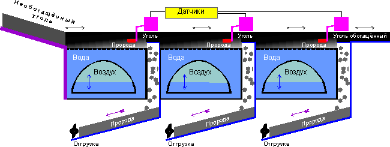
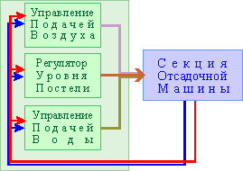
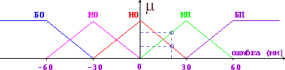
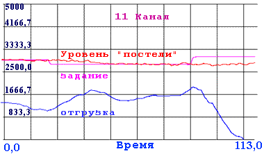

| Список трудов | Fuzzy Technologies Lab. |
НЕЧЕТКОЕ УПРАВЛЕНИЕ ТЕХНОЛОГИЧЕСКИМ ПРОЦЕССОМ ОБОГАЩЕНИЯ УГЛЯ МЕТОДОМ ОТСАДКИ
Е.П.Бакулин, В.Ф. Головин, Ю. Н.Золотухин, А.А. Нестеров, В. Н. Чайко, А.П. Ян
Лаборатория нечетких технологий
Института автоматики и электрометрии
Сибирского отделения РАН
630090, Новосибирск, пр. ак. Коптюга, 1
Тел.: (3832) 33 26 25, Факс: (3832) 33 38 63
E-mail: zolotukhin@iae.nsk.su
Ключевые слова : Нечеткое управление, обогащение методом отсадки
Abstract.
Large complex system like a jigging machine for coal processing is very difficult object for controlling. In this paper we propose fuzzy logic control system for jig coal processing.
Способ обогащения угля методом отсадки получил преимущественное распространение в углеобогатительной промышленности большинства стран мира, благодаря простоте, универсальности и дешевизне. С точки зрения автоматизации - это достаточно сложный процесс ввиду отсутствия адекватной математической модели и наличия ряда трудноконтролируемых возмущений (изменения нагрузки, гранулометрического, фракционного и химического состава исходного продукта), а также отсутствия оперативных методов анализа обогащенного продукта и отходов.
- 1. Введение
Гидравлическая отсадка - это процесс разделения компонентов исходной смеси в вертикально пульсирующем потоке воды знакопеременной скорости. Фактором разделения при обогащении углей в отсадочной машине согласно классическому направлению теории отсадки является относительная разница в конечных скоростях падения, зависящих от размера частицы, ее плотности и плотности среды [1]. Принципиальная схема отсадочной машины приведена на рис.1. Исходный уголь загружается на решето рабочего отделения. Под действием поршня или сжатого воздуха создаются вертикальные колебания воды. Смесь угля, породы и промежуточных фракций, лежащая на решете (постель), пульсирующим потоком воды приводится попеременно в разрыхленное и уплотненное состояния. Под действием порций загружаемого материала, а также от движения транспортной воды, поступающей в машину с исходным материалом, и подрешетной воды вся постель перемещается в горизонтальном направлении, одновременно расслаиваясь на тяжелый и легкий продукты. Нижние слои постели, состоящие из тяжелых продуктов, удаляются из отсадочной машины через разгрузочное устройство, которым заканчивается каждая ступень машины. Обогащенный продукт или концентрат вместе с водой удаляется через сливной порог.
- 2. Специфика технологического процесса

Рис. 1 Параметры, влияющие на процесс отсадки, разделяются на гидродинамические и технологические. К гидродинамическим относятся параметры, обуславливающие создание колебательного режима среды и взвешивание постели; особенно важное значение имеют расход подрешетной воды и расход воздуха. Технологические параметры связаны с качеством обогащаемых углей, т.е. их фракционным и гранулометрическим составом.
- 3. Параметры отсадки
В технологии процесса отсадки преследуется цель разделения исходного материала с максимально возможной точностью на фракции различной плотности. К факторам, с помощью которых производится управление, относятся:
- 4. Существующий подход к управлению отсадкой
- расход подрешетной воды; Как правило, отсадочные машины имеют автоматическую разгрузку тяжелых фракций, а остальное оперативное регулирование осуществляет человек-эксперт, наблюдая за работой машины с учетом данных периодических фракционных экспресс - анализов продуктов отсадки.
- амплитуда, частота и характер вертикальных пульсаций (расход и давление воздуха);
- скорость разгрузки тяжелых фракций.Наличие многих неопределенностей делает целесообразным применение нечеткого управления [2] технологическим процессом отсадки. Структурная схема системы управления приведена на рис. 2.
- 5. Структурная схема системы управления на основе нечеткого контроллера
Предложенная система управления имеет два уровня иерархии. Нижний уровень составляют регуляторы параметров технологического процесса ( разгрузки тяжелых фракций, подачи воздуха и воды ), режим работы которых задается нечетким супервизорным контроллером верхнего уровня на основе информации о составе исходной шихты, данных оперативного контроля ( фракционного анализа, показаний золомера и др.).

Рис.2
Регулятор уровня постели, реализованный как двухвходовой нечеткий контроллер, работает следующим образом: ошибка ( разность между уставкой и фактическим значением ) и производная ошибки высоты постели представляются нечеткими множествами типа "большая", "малая", "нулевая" и т.д. Управляющий сигнал формируется путем нечеткого логического вывода на основе базы правил ( табл. 1 ) и вычисления результата методом "центра тяжести" [3]. Расстановка термов для лингвистической переменной "высота постели" приведена на рис. 3.

Рис.3
Табл.1 Ошибка Производная ошибки Скорость разгрузки большая отрицательная (БО) большая отрицательная очень сильно уменьшить большая отрицательная малая отрицательная сильно уменьшить большая отрицательная нулевая умеренно уменьшить большая отрицательная малая положительная слегка уменьшить большая отрицательная большая положительная не изменять малая отрицательная (МО) большая отрицательная сильно уменьшить малая отрицательная малая отрицательная умеренно уменьшить малая отрицательная нулевая слегка уменьшить малая отрицательная малая положительная не изменять малая отрицательная большая положительная слегка увеличить нулевая (НО) большая отрицательная умеренно уменьшить нулевая малая отрицательная слегка уменьшить нулевая нулевая не изменять нулевая малая положительная слегка увеличить нулевая большая положительная умеренно увеличить малая положительная (МП) большая отрицательная слегка уменьшить малая положительная малая отрицательная не изменять малая положительная нулевая слегка увеличить малая положительная малая положительная умеренно увеличить малая положительная большая положительная сильно увеличить большая положительная (БП) большая отрицательная не изменять большая положительная малая отрицательная слегка увеличить большая положительная нулевая умеренно увеличить большая положительная малая положительная сильно увеличить большая положительная большая положительная очень сильно увеличить
Экспериментальные кривые для уровня постели и выходного сигнала контроллера, полученные в ходе нормальной работы отсадочной машины, приведены на рис.4. Среднеквадратичная ошибка удержания заданной высоты постели при переменной нагрузке составила 0.2%. Длительность переходного процесса при небольших изменениях задания - до 30 с, причем при отсутствии выброса за уровень задания.

Рис.4
Предложена комплексная двухуровневая система управления отсадочной машиной с использованием нечетких контроллеров. Экспериментально показана эффективность работы системы в различных режимах технологического процесса.
- 6. Заключение.
©1997, 1998 Fuzzy Technologies Lab.
mailto: zolotukhin@iae.nsk.su